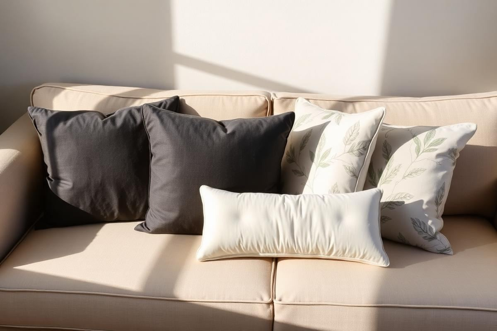

How to Arrange Throw Pillows on a Sofa Without Overdoing It

How to Arrange Throw Pillows on a Sofa Without Overdoing It is one of those topics where a little planning goes a long way. In this guide I walk through the process we use in real homes — not just what looks good in a photo, but what actually holds up over time.
Start here
Before you buy or move anything, measure the space and note how you actually use it. The best-looking room is one that matches how you live, so start with the routines: where you sit, where you drop keys, where the light falls in the afternoon.
The essentials
Focus on the pieces that do the most work. Get those right and the rest of the room comes together with much less effort. Aim for materials that patina rather than degrade, and colors you will still like in five years.
- Choose one clear focal point per room.
- Pick materials that improve with age.
- Layer textures instead of adding more colors.
- Leave visual breathing room — negative space is a design element.
Common mistakes
The mistakes we see most often are matching everything too tightly, over-scaling accessories, and skipping proper lighting. Fix those three and most rooms improve overnight.

Mastering the Mix and Match
The true artistry of throw pillow arrangement lies in a curated mix-and-match approach. Avoid monochromatic sets; instead, aim for a balanced interplay of textures, patterns, and solids. For a standard three-seater sofa (approximately 80-90 inches long), I recommend selecting a primary solid color pillow, often a larger square, as your anchor. Consider a 22x22-inch linen pillow in a neutral tone like ivory or charcoal for about $40-$60. Then, introduce a complementary patterned pillow, perhaps a 20x20-inch option with a subtle geometric or botanical print, which can range from $30-$50. Finally, add a smaller, accent pillow – this is where you can experiment with unexpected textures like faux fur, velvet, or a unique lumbar shape. A 12x20-inch velvet lumbar pillow can cost $25-$45. This tiered approach prevents visual clutter while adding depth and interest. Remember, not every pillow needs to be expensive; sometimes a well-chosen sale find can elevate the entire ensemble.
Texture and Pattern Harmony
When combining patterns, consider scale. Pair a large-scale graphic with a smaller, more intricate design to avoid competition. For textures, mix soft with firm. A chunky knit alongside a smooth silk provides a tactile experience that enhances the visual appeal. My rule of thumb is to have at least three distinct textures represented across your pillow selection. A common mistake is buying multiple pillows with the same texture, which flattens the look.
The Art of the Chop and Plump
Once your pillows are in place, the 'karate chop' is a simple yet impactful technique to give them a professionally styled look. This involves firmly striking the top center of a square or rectangular pillow with the side of your hand, creating a soft indentation. This isn't about making a sharp crease, but rather a gentle dip that emphasizes the fullness of the pillow and shows off its shape. It communicates a sense of care and intentionality, rather than just randomly tossing pillows onto the sofa. Not all pillows are created equal for the chop; those with feather or down inserts (often $20-$40 per insert) will hold the chop best due to their malleability. Foam inserts (closer to $10-$20) tend to be too stiff and won't retain the shape. If your pillows feel flat or lack volume, consider upgrading their inserts. A well-plumped pillow, even without the chop, makes a significant difference. It's about achieving that inviting, lived-in yet polished aesthetic.
- Feather/down inserts: Best for retaining 'chop' and plush feel.
- Synthetic/foam inserts: Less ideal for the 'chop', can feel stiff.
- Overstuffing: Can make pillows look uninviting and uncomfortable.
A common mistake is forgetting to fluff the pillows daily. Even the best inserts can flatten over time, losing their inviting appeal. A quick plump and chop each morning takes mere seconds but maintains the sofa's welcoming look.
Selecting Inserts Wisely
The cover is only half the story; the insert dictates the pillow's comfort, shape retention, and overall feel. For that luxurious, plush look, a 95% feather, 5% down insert is my absolute recommendation. These are typically priced between $15-$40, depending on size, and offer the perfect blend of support and softness, allowing for easy shaping and that desirable 'karate chop.' When purchasing an insert, always go one size up from your pillow cover for a fuller, more substantial look. For example, a 20x20-inch cover needs a 22x22-inch insert. This simple trick prevents a saggy, understuffed appearance. For outdoor use or allergy sufferers, synthetic down alternative inserts are a good option, costing around $10-$25. While they don't have the same conforming quality as feather/down, modern alternatives have vastly improved in feel. Avoid inexpensive polyester fiberfill inserts if possible; they tend to flatten quickly and offer little support or aesthetic appeal, often found in budget pillows costing under $15.
Size Up for Fullness
Always measure your pillow cover edge-to-edge before purchasing an insert. An insert that is too small will result in a floppy, uninviting pillow. An insert that is slightly larger fills the corners completely and gives that bespoke, designer finish.
Seasonal Swaps and Rotations
Elevate your sofa's style quarterly by integrating seasonal throw pillow swaps. This isn't about complete overhauls, but rather subtle changes that reflect the time of year. For spring, consider lighter fabrics like cotton or linen in fresh pastels, soft greens, or floral patterns. A few new 18x18-inch cotton covers can cost as little as $15-$25 each. Summer calls for crisp whites, blues, or vibrant patterns that evoke a relaxed, airy feel. In autumn, introduce richer textures such as velvet or faux suede in deep jewel tones like mustard, rust, or emerald. A velvety 20x20-inch cover might be $20-$35. Winter naturally lends itself to cozier elements: chunky knits, faux fur, or darker, warming hues like charcoal or deep cranberry. Consider a small faux fur lumbar pillow for $25-$40. You don't need to change every pillow; sometimes swapping just one or two covers can dramatically alter the mood of your living space. Store seasonal covers folded in airtight containers to protect them from dust and pests, ensuring they're fresh for their next rotation.
Cost-Effective Refresh
Focus on purchasing pillow covers rather than entire pillows for seasonal changes. Keeping a core set of quality inserts (as discussed in 'Selecting Inserts Wisely') allows for budget-friendly transformations. A complete set of four seasonal covers might run you $60-$120, a small price for a year-round refreshed look. Avoid buying overly trendy patterns that will quickly feel dated.
Long-Term Care and Maintenance
Proper care ensures your throw pillows look fresh and vibrant for years. Always check the care labels on both the pillow covers and inserts. Most natural fiber covers like linen or cotton can be machine washed on a gentle cycle with cold water and air-dried to prevent shrinkage and fading. Delicates like velvet, silk, or heavily embellished covers often require dry cleaning or spot cleaning only. For feather/down inserts, occasional airing outdoors on a sunny, breezy day helps to fluff them up and remove any latent odors. If washing is necessary, use a large-capacity machine on a delicate cycle with a small amount of mild detergent, and tumble dry on low with dryer balls to restore loft. Over-washing can degrade the quality of the fill. Synthetic inserts can generally be machine washed and dried. A common mistake is neglecting spills, allowing them to set and stain permanently. Address any liquid spills immediately by blotting with a clean cloth. For solid messes, gently scrape off what you can, then spot clean. Investing in quality fabric protector sprays (around $10-$20 per can) for frequently used pillows can also extend their lifespan by repelling liquids and preventing stains.
Protecting Your Investment
Regular vacuuming with an upholstery attachment helps remove dust and allergens from both covers and inserts. For covers that aren't machine washable, a garment steamer (a good one starts around $40) can refresh and de-wrinkle them without harsh chemicals or heat. Consistent, gentle care prevents premature wear and keeps your throw pillow arrangement looking its best, making your initial investment worthwhile.
Key takeaways
- Match the room to how you actually live.
- Anchor with one main piece and clear lighting.
- Layer textures, not colors.
- Leave breathing room around every object.
Frequently asked questions
Where should I start?
Start with the largest piece and the light. Everything else — art, textiles, small objects — is easier to place once those two anchors are set.
What is a realistic budget?
Prioritize the pieces you touch every day. Spend more on those and less on decorative items, which are easy to swap over time.
How long should this last?
A well-chosen main piece should last 10–15 years. Refreshes come through textiles, art, and accessories, not full replacements.

Sophia Bennett is a certified interior stylist and the senior editor at Styleire. She has spent more than eight years helping homeowners and renters create warm, functional interiors, with hands-on experience across small city apartments and family homes. Her work has been informed by close collaboration with independent designers, craftspeople, and product testers.
View full profile →Related reading

Small Living Room Layout Ideas That Actually Work
The right layout can make a 12x12 living room feel generous. Here is the exact process a stylist uses to plan one, from focal point to rug size.

How to Choose a Sofa: The Complete Buyer's Guide
A good sofa lasts fifteen years. Here is how to make sure the one you buy is one of them.

Living Room Color Schemes That Age Well
Living Room Color Schemes That Age Well — a clear, editor-tested guide covering the essentials without the filler.